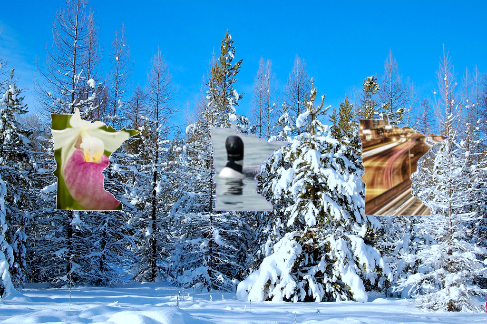

This is my projects page!
To the right you can see my gimp final project. For this project I used various photo editing tools on Gimp to photoshop minnesota symbols into the shape of Minnesota outlines.The symbols I selected include the lady slipper, the Minneapolis skyline, and a loon. The background in which the minnesotas are layered on top of is a scene from a snowy Minnesota winter.
Below
you will find varioius other projects created by Emma.